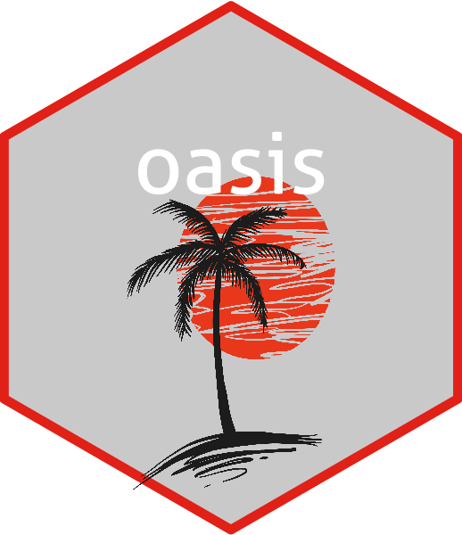

oasis is an R package based on the paper: OASIS is Automated Statistical Inference for Segmentation, with applications to multiple sclerosis lesion segmentation in MRI by Sweeney et al. This package implements the model and the processing stream, which is based in FSL, that is ported to R through fslr.
Logo downloaded from https://www.vecteezy.com/nature/54483-palm-tree-vector-free-vector-of-the-day-252
Links
- Download from CRAN at
https://cran.r-project.org/package=oasis
License
Citation
Developers
- Elizabeth M. Sweeney
Author, maintainer - John Muschelli
Author - R. Taki Shinohara
Author